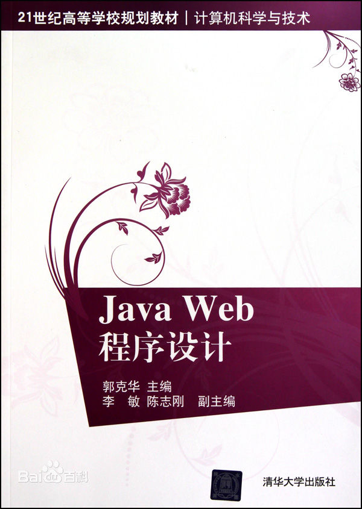

|
------------------------------------------------------------------------------------------------------------- 《Java Web程序设计》分为5部分共19章，包括入门、JSP编程、Servlet和JavaBean开发、应用开发与框架、其他内容。《Java Web程序设计》使用的开发环境是JDK 1.6+MyEclipse 7.0+Tomcat6.x，引领读者从基础到各个知识点循序渐进地学习。全书内容由浅人深，并辅以大量的实例说明，《Java Web程序设计》的最后提供了一些课程设计的内容。 《Java Web程序设计》提供了所有实例的源代码，以及开发过程中用到的软件，供读者学习参考使用。 《Java Web程序设计》为学校教学量身定做，每个章节都有建议的课时。《Java Web程序设计》供高校Java Web开发相关课程使用，也可供有Java SE基础但没有Java Web开发基础的程序员作为入门用书，还可供社会Java Web开发培训班作为教材使用，对于缺乏项目实战经验的程序员来说可用于快速积累项目开发经验。
------------------------------------------------------------------------------------------------------------- |
|
-------------------------------------------------------------------------------------------------------------
------------------------------------------------------------------------------------------------------------- |
|
-------------------------------------------------------------------------------------------------------------  《Java Web程序设计》分为5部分共19章，包括入门、JSP编程、Servlet和JavaBean开发、应用开发与框架、其他内容。《Java Web程序设计》使用的开发环境是JDK 1.6+MyEclipse 7.0+Tomcat6.x，引领读者从基础到各个知识点循序渐进地学习。全书内容由浅人深，并辅以大量的实例说明，《Java Web程序设计》的最后提供了一些课程设计的内容。 《Java Web程序设计》提供了所有实例的源代码，以及开发过程中用到的软件，供读者学习参考使用。 《Java Web程序设计》为学校教学量身定做，每个章节都有建议的课时。《Java Web程序设计》供高校Java Web开发相关课程使用，也可供有Java SE基础但没有Java Web开发基础的程序员作为入门用书，还可供社会Java Web开发培训班作为教材使用，对于缺乏项目实战经验的程序员来说可用于快速积累项目开发经验。
------------------------------------------------------------------------------------------------------------- |